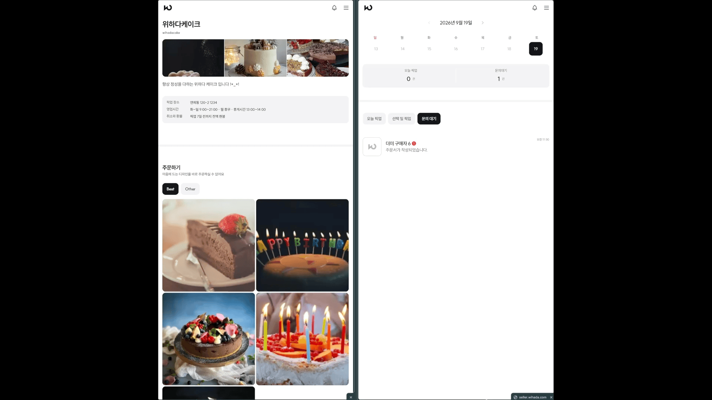
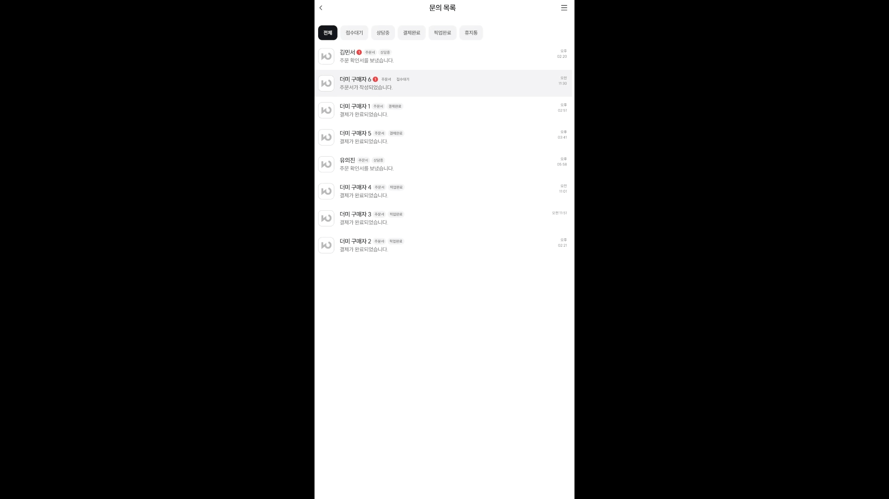

판매량보다 반복 업무를 줄이는 일이 먼저였습니다
소셜 셀러 전반을 위한 판매 서비스로 출발했지만, 현장 인터뷰 뒤 1차 타깃을 주문제작 케이크 매장으로 좁혔습니다.
처음 세운 가설
처음에는 판매 페이지와 간편 결제를 제공하면 된다고 생각했습니다. 개발에 앞서 소셜 셀러가 스마트스토어·카페24 같은 기존 플랫폼을 사용하지 않는 이유부터 확인하기로 했습니다.
인터뷰에서 확인한 업무
판매자는 DM이나 카카오톡으로 상담하고 주문 양식을 따로 보냈습니다. 고객 답변을 다시 확인하거나 옮겨 적고, 통장에서 입금 여부를 찾은 뒤 제작할 때 채팅 기록을 다시 살폈습니다. 주문 한 건이 여러 채널에 흩어져 있었습니다.
기존 쇼핑몰이 맞지 않은 이유
주문제작 케이크는 디자인, 문구, 크기와 픽업 시각을 상담한 뒤에야 가격이 정해집니다. 고정 상품과 옵션을 먼저 등록하는 방식은 판매를 돕기보다 주문마다 다시 계산하고 설명해야 하는 업무가 됐습니다.
우선순위를 바꾼 이유
한두 명이 상담과 제작을 함께 맡는 매장에는 신규 주문을 늘리는 기능보다 이미 들어온 주문을 놓치지 않는 기능이 먼저였습니다. 인터뷰와 사내 세일즈팀 논의를 바탕으로 타깃과 제품 범위를 좁혔습니다.
선택한 제품 흐름
상품 가격을 미리 정하지 않고 주문 단위로 결제하도록 설계했습니다. 고객이 주문서를 제출하면 판매자가 상담 결과를 주문확인서에 기록하고 최종 금액을 정합니다. 고객은 자신의 주문 조건과 금액을 확인한 뒤 결제합니다.


만들지 않기로 한 것
일반 쇼핑몰처럼 상품과 가격을 먼저 표준화하지 않았습니다. 주문제작 판매자의 실제 업무와 맞지 않았기 때문입니다. 메신저 사용 습관을 한 번에 바꾸기보다 인스타그램 프로필 링크에서 주문서를 시작하고, 상담 결과와 결제 정보를 서비스 안에 남기는 범위부터 구현했습니다.